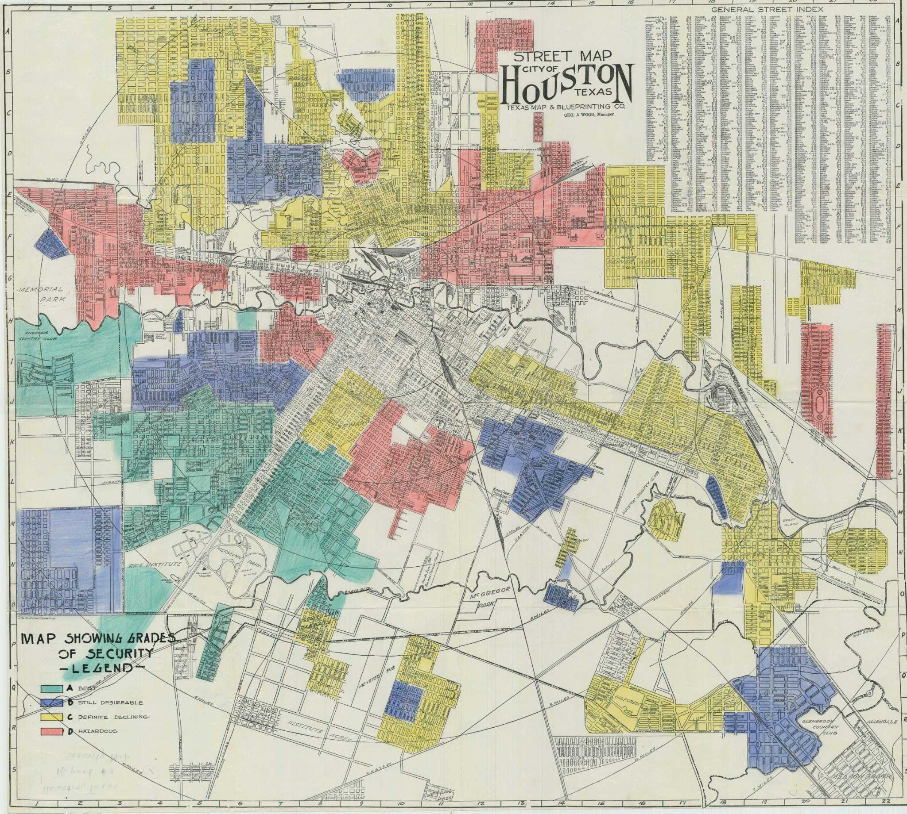

In 2015, Houston METRO redrew its bus map, prioritizing a more efficient grid system. In a city that is very vehicle-centric and sprawled, proximity to basic necessities, such as job access, grocery availability, and childcare options, is crucial.
How do we figure this out?
The base unit is the census block group, a neighborhood of roughly 1,000 to 3,000 residents (2,144 of them across Harris County). For each one, EPA's Smart Location Database counts the jobs one could reach within a set amount of travel time on the Houston METRO schedule, and the Census Bureau's American Community Survey (ACS) gives the share of households without a car and their income. Grocery and childcare data are only published at the larger census tract, which groups several block groups together, so those two questions are answered at that level.
Why 45 minutes? It is about as long a one-way trip as many people will make for work or an errand, and a standard threshold in transit-access research (and is EPA-endorsed).
Some neighborhoods depend on transit more than others.
In the most transit-reliant block groups, up to 61% of households have no car.
Where fewer people own a car, the bus is a necessity. These are the places where living close to transit matters most.
Method: Shading is the share of households with no vehicle available, per block group (ACS 2019 5-year).
Job access is uneven across the city.
Within the area transit serves, the typical block group can reach about 204,000 jobs in 45 minutes. The best-connected reach nearly 700,000; the worst can only access a few thousand.
Method: Color is the number of jobs reachable within 45 minutes on the METRO schedule (EPA Smart Location Database). Grey block groups fall outside the area the data covers.
The outer ring of the urban core, who most need transit, often have the least access.
High transit need and low job access each say little on their own. Where they overlap are the neighborhoods that depend on the bus the most and get the least from it, cutting residents off from jobs and weighing on the local economy.
181 block groups mostly on the outer ring of the urban core tell a story of being stranded, having the highest need for transit (higher shares of car-free households) and lowest job access.
Method: Highlighted block groups rank in the top third for car-free households and the bottom third for 45-minute job access.
And some households have no transit at all.
Groups across the region, equalling about 57,000 people, show at least 15% of households own no car and the nearest transit stop sits more than half a mile away. College campuses are left out, since students there tend not to own cars because of student life.
Block group
Car-free
Median income
Nearest stop
Method: Block groups where at least 15% of households own no car and the nearest stop is over half a mile away (college campuses are excluded).
Jobs aren't the only necessary destination.
338 census tracts, each made up of several block groups, are both low-income and far from a grocery store.
For a car-free household, whether the nearest supermarket is one bus ride away or several compounds the risk to food security.
Method: USDA flags a tract when it is low-income and a meaningful share of its residents live more than half a mile from a supermarket. Because it counts residents, a store near the center of a tract does not clear it if the edges are still far (Food Access Research Atlas, 2019).
Take away the car as well.
54 of those 338 grocery deserts are considered transit-dependent groups: at least 15% of households own no car. This accounts for a population of about 227,000 people. Here, the nearest supermarket is far, and driving to it is not an option for many.
These tracts having a bus route is crucial. Rather than a bus route being a convenience, it becomes the line between food being on the dinner table or not.
Method: Grocery-desert tracts where at least 15% of households also own no car.
Childcare is also very scarce.
595 tracts are childcare deserts, and 370 have no licensed slots at all.
Even if one has a job they can reach, it does not help if there is nowhere to leave the kids on the way.
Method: A tract is flagged when it has children under 5 but more than three of them for every licensed child-care slot, or no licensed slots at all (Texas HHSC licensing, 2026; under-5 population from ACS 2020 to 2024).
Sixty-six tracts are highlighted in every analysis.
These tracts land on all three maps, meaning they have less job access, live in a grocery desert, and also live in a childcare desert. About 334,000 people live in them.
Here the hardships stack together: the same means-tested households absorb a hard commute, a distant grocery run, and a scramble for childcare all at once.
Tract
Residents
Median income
Car-free
Method: Each of these tracts contains at least one of the 181 highest-need, lowest-access block groups and is also a grocery desert and a childcare desert. Grocery and job data use the 2010 census tract boundaries and childcare the 2020 boundaries.
Some of these disadvantages were created almost 100 years ago.
Many of the neighborhoods that now fail all three access tests were graded "D, Hazardous" (red) or "C, Definite Declining" (yellow) on Houston's Depression-era redlining map, marked too risky for mortgage lending largely because of who lived there.

Grades of Security, City of Houston. Green A "Best" through red D "Hazardous." The starred navy dot marks Rice Institute (now Rice University); it is the reference point for orienting this historic map against the live map, which carries the same marker. Click to enlarge and pan. Source: Library of Congress, via the Houston Chronicle.
These communities were denied investment then, and are denied amenities and quality of life now. Rather than coincidence, this spatial pattern is the consequence of decisions made nearly a century ago, and a choice to not undo the injustices since.
Method: The tracts that fail all three tests today, shown beside Houston's 1930s residential security map from the federal Home Owners' Loan Corporation (HOLC).